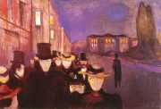
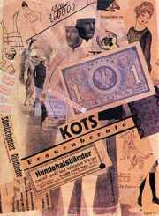
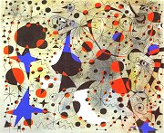
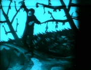

Obsah
Kubismus
Futurismus
Dadaismus
Surrealismus
Proletářská poezie
Poetismus
Český surrealismus
Imagismus a akméismus
Expresionismus
Avantgardní divadlo
Skupina 42
+ Jaroslav Seifert
+ Vítězslav Nezval
+ Vladislav Vančura
+ Jiří Kolář
+ Josef Kainar
Ernst: Kozorožec
Avantgardní manifesty
|
AVANTGARDA
Avantgarda (franc. předvoj) prožívala svůj zlatý věk v první třetině 20. století. Avantgardní umělci kladli velký důraz na formu a nové tvůrčí postupy. Neuznávali tradiční estetické, morální ani jiné hodnoty a chtěli vybudovat nový řád. Nové směry většinou ovlivnily více druhů umění zároveň. Kubismus se projevil v malířství i architektuře, futurismus, dadaismus, expresionismus a surrealismus v literatuře i výtvarném umění. Tyto směry se velmi rychle rozšířily do celého světa. Ostatní ismy byly více spjaty s konkrétní zemí a omezily se pouze literaturu, například ruský akméismus a imažinismus, angloamerický imagismus nebo proletářské umění a poetismus v Československu. Avantgardních směrů bylo velké množství a těžko se hledají rysy, které by byly společné všem. Umělci rádi spolupracovali napříč různými oblastmi i státy, vytvářeli uzavřené skupiny a psali manifesty. Společná je také jejich radikálnost a revolučnost. Tvůrci oslavovali výdobytky moderní vědy i techniky a snili o lepším a spravedlivějším světě. Řada spisovatelů a malířů prošla hned několika avantgardními směry.
Někteří odborníci dělí avantgardu na dva hlavní proudy. Kubismus, konstruktivismus, futurismus nebo abstraktní umění se soustřeďují na racionální analýzu a objektivní přístup ke světu. Expresionismus, dada, surrealismus nebo poetismus jsou směry subjektivnější a upřednostňují tvořivost a prožitek.
Nejvýznamnějším avantgardním spisovatelem byl Francouz Guillaume Apollinaire.
Avantgardní manifesty
Avantgardní umělci si velmi oblíbili žánr manifestu. Zatímco moderní umělecké směry si většinou vystačily s jedním programovým prohlášením, avantgardisté psali jeden manifest za druhým. Zveřejňovali v nich své názory a postoje, demonstrovali politickou orientaci, popisovali konkrétní tvůrčí postupy, bránili nový směr proti jeho odpůrcům nebo vysvětlovali své výtvory. Díky tomu se už nemuseli v uměleckých dílech těmto problémům věnovat.
|
Historie
První polovina 20. století byla ve znamení mnoha historických zvratů. V evropských zemích se posiluje demokracie. Postupně se zavádí všeobecné a rovné hlasovací právo. Později mohou volit i ženy a vzrůstá vliv demokratických institucí. Tento vývoj přervala 1. světová válka (1914-1918). Další ranou pro demokracii byl bolševický převrat v Rusku (1917), Leninův program válečného komunismu a Stalinův kult osobnosti. V mnohých evropských státech se dostali k moci nacionalisté (Itálie, Španělsko...). Vítězství Hitlera a nacistů v Německu (1933) vedlo k rozpoutání 2. světové války (1939-1945).

Chirico: Guillaume Apollinaire
|
Kolektivismus
Kolektivním chováním a masovou psychologií se zabývali filozofové i vědci. Rakouský psychoanalytik Sigmund Freud zkoumal kolektivní duši. Francouzský antropolog Gustave Le Bon píše pojednání Duše davu a Zákony psychologického vývoje národů. Španělský filozof José Ortega y Gaset napsal esej Vzpoura davů. Rakouský spisovatel Elias Canetti publikoval mnohem později na podobné téma knihu Masa a moc.
|
Avantgardní skupiny
Zatímco moderní umělci byli většinou zapřisáhlí individualisté, avantgardní tvůrci se naopak rádi sdružovali v různých skupinách a svazech. Ty navíc spolupracovaly napříč různými státy a vydávaly společné mezinárodní časopisy. Avantgardní umělci se také více občansky angažovali a vstupovali do radikálních politických stran. Avantgardní skupiny měly své programové teoretiky, kteří se věnovali psaní manifestů a propagaci jednotlivých hnutí. Často se v nich scházeli umělci z různých oborů – malíři, spisovatelé, sochaři, režiséři, herci atd. Surrealistické skupiny existují dodnes, ostatní uskupení měla kratší trvání. Jenom v Čechách vznikají sdružení Osma, Skupina výtvarných umělců, Devětsil, Literární skupina, Skupina surrealistů v ČSR nebo Skupina 42. Umělci také vytvářeli kolektivní díla, buď ve dvojici nebo celé skupině.
|

|
Komunismus a nacismus
Soudruh Lenin uklízí zeměkouli
|
Avantgarda a totalitní režimy
Avantgardní umělci objevili řadu nových tvůrčích postupů a přišli s převratnými myšlenkami. Podobný radikální obrat hlásali i zakladatelé novodobých totalitních ideologií Lenin a Hitler. Většina avantgardních umělců odmítala demokratické zřízení a podporovala komunismus nebo nacismus. Zvlášť, když se jejich zakladatelé dostali k moci. Ruští futuristé, členové Devětsilu a surrealisté tíhli k bolševismu, ale když začal Stalin likvidovat bývalé soudruhy, mnozí z nich prohlédli a připojili se k jeho kritikům. Italské futuristy zase oslovil fašismus a Mussolini. Nacismus zaujal německé expresionisty a angloamerické imagisty. Tyto ideologie zprvu využívaly podporu avantgardních umělců, ale jakmile si upevnily mocenské pozice, začaly nové umění pronásledovat. V Německu byly moderní i avantgardní směry prohlášeny za zvrhlé umění. Řada umělců raději emigrovala do zahraničí, jiní skončili v koncentračních táborech, nebo byli popraveni. V Sovětském svazu byli umělci pronásledováni pro zrůdný formalismus. Končili ve vězeních, pracovních táborech, na popravištích nebo nevyjasněnými sebevraždami.
|
Chaplin paroduje Hitlera ve svém filmu Diktátor
|
Výtvarné umění
Le Corbusier:
Notre Dame du Haut

Lisickij, Stam: Žehličky mraků
|
Avantgardní architektura
Na začátku 20. století se prosadil jako hlavní stavební materiál beton. Pevné ocelové konstrukce umožnily avantgardním architektům realizovat velmi odvážné projekty. Městem jako organickým celkem se začala zabývat urbanistika. Zajímavá byla myšlenka kolektivních domů a koncepce bytu jako „stroje na bydlení“. Avantgardisté odmítali secesní ozdůbky a neúčelové prvky. Pravou krásu spatřovali v konstrukci a funkčnosti.
Nejvýznamnějším avantgardním architektem byl Francouz Le Corbusier [korbisje], zakladatel purismu a funkcionalismu, který zdůrazňoval přísnou funkčnost staveb i běžných předmětů. V Rusku se přihlásil o slovo konstruktivismus (Lisickij, Tatlin...), který odmítl zakrývat konstrukci stavby fasádou a stavěl na odiv technickou stránku budov. Tento směr ovlivnil také výtvarné umění, scénografii nebo knižní kulturu. V Německu vznikla avantgardní výtvarná škola Bauhaus, ze které vzešlo mnoho užitých předmětů s přísně účelovým designem. Československo dalo světu kubistickou architekturu (Gočárův dům U Černé Matky Boží v Praze), vznikaly zde i stavby funkcionalistické (Veletržní palác O.Tyla a J.Fuchse v Praze).
|

Tatlinova věž Třetí internacionály nebyla realizována, stejně jako mrakodrapy „žehličky“ mraků a mnohé další konstruktivistické projekty.
|

Munch: Večer na Karl Johan

Schwiters: Kots
|
Avantgardní malířství
Nejvýznamnějším avantgardním malířem byl zakladatel kubismu Španěl Pablo Picasso. Tento umělec je považován za objevitele techniky koláže a asambláže.
Koláž vzniká spojením papírových výstřižků z novin nebo časopisů a jejich nalepením na plochu. Hojně ji využívali dadaisté a surrealisté. Asambláž je na rozdíl od koláže trojrozměrná a tvoří ji různé předměty nebo jejich části. Dadaisté využívali při tvorbě náhodu. Surrealisté přišli s technikou automatické kresby. Španělský malíř Salvador Dalí prosazoval tzv. paranoicko-kritickou metodu.

Picasso: Ateliér se sádrovou hlavou
|
Dalí: Kanibalismus podzimu

Miró: Půlnoční zpěv slavíka a ranní déšť
|
Brancusi: Křídlo ptáka

Rekonstrukce Pešánkova spektrofonu
|
Avantgardní sochařství
Avantgardní sochaři začali vytvářet nefigurativní plastiky. Dadaistické ready-mades byly obyčejné předměty denní potřeby poťouchle vydávané za umění a vystavované v galeriích. Surrealisté vytvářeli podivné objekty sestavené z nejrůznějších předmětů. Klasické sochy, které by realisticky zobrazovaly postavy, avantgardní umělci neuznávali. Nejvýznamnějšími sochaři byli Rumun Konstantin Brancusi [brankuš] nebo Švýcar Alberto Giacometti [džakometi]. Skulptury tvořil také Picasso, Duchamp, Ernst, Miró nebo Dalí. Nejoriginálnějším českým sochařem byl autor kinetických svítících plastik Zdeněk Pešánek, který doplnil klavír o zvláštní svítící zařízení, tzv. spektrofon.

Picassova Koza je vlastně asambláž. Břicho tvoří proutěný košík, rohy vinný keř a zadek osvětlovací těleso.
|
Duchamp: Stojan na sušení láhví

Giacometti: Stůl
|
Hudba

Jaroslav Ježek diriguje orchestr Osvobozeného divadla
|
Avantgardní hudba
Avantgardní skladatelé si libovali v kakofonii a disharmoniích. Někdy se soustředili na grafickou podobu partitury a vůbec se nezabývali tím, zda ji lze zahrát. Český umělec profesor Alois Hába skládal tzv. čtvrttónovou hudbu. Tu lze zahrát pouze na speciální klavír, který má kromě bílých a černých kláves ještě další. Jeho stupnice totiž zahrnovala kromě tónů a půltónů ještě čtvrttóny. Nejvýznamnějším meziválečným skladatelem byl Rakušan Arnold Schönberg, tvůrce dodekafonie. Někteří avantgardní umělci si oblíbili americký jazz, například Čech Jaroslav Ježek. Divadelní režiséři jako Brecht, Honzl nebo E.F.Burian využívali písně v avantgardních inscenacích.
|
Schönbergův autoportrét
|
Avantgardní film

Wiene: Kabinet doktora Caligariho
|
Avantgardní kinematografie a fotografie
Film byl stejně jako fotografie zprvu pouhým technickým výstřelkem a pouťovou atrakcí. Záhy se ale z jeho sledování stala oblíbená zábava a ve všech větších městech vznikla stálá kina. Nové filmové společnosti do nich dodávaly hlavně grotesky a nepříliš kvalitní komerční snímky. Umění udělali z filmu až avantgardní režiséři, kteří experimentovali se světlem, střihem a filmovými triky. Vtiskli mu také nový estetický obsah. Filmovou obdobu měl expresionismus (Wiene, Lang, Murnau), surrealismus (Buñuel, Dalí) i poetismus (Nezval, Machatý). Významným avantgardním fotografem byl Man Ray. Velmi oblíbené byly fotografické koláže (Teige).
|
Avantgardní fotografie
Man Ray: Bez názvu
|
Internetové stránky
Avantgarda
Kubismus
Futurismus
Bauhaus
Bauhaus
Bauhaus
Expresionismus
Surrealismus
Koláže
Le Corbusier
Le Corbusier
Le Corbusier
Brancusi, sochař
Brancusi, sochař
Giacometti, sochař
Schönberg, hudební skladatel
Pešánek, výtvarník
Nazi & Soviet Art
Le Bon: Psychologie davu
Exkurze
Veletržní palác, Národní galerie v Praze
České muzeum výtvarných umění, Praha
|
Doporučená četba
Avantgarda známá a neznámá, Generační diskuse (3 svazky), Svoboda
Čapek, Karel: Francouzská poezie a jiné překlady, SNKLHU, Praha 1957
Dějiny českého výtvarného umění, 1890-1938, IV, Academia, Praha 1998
Hlaváč, Ľudovít: Dejiny fotografie, Osveta, Praha 1987
Hoffmeister, Adolf: Čas se nevrací, Československý spisovatel, Praha 1965
Hoffmeister, A.: Podoby a předobrazy, Československý spisovatel, Praha 1988
Hrubý, Petr: Osudné iluze, Čeští spisovatelé a komunismus 1917-1987
Lamač, Miroslav: Osma a Skupina výtvarných umělců (1907-1917), Odeon, Praha 1988
Micheli, M. de: Umělecké avantgardy dvacátého století, Praha 1964
Mrázková, Daniela: Příběh fotografie, Mladá fronta, Praha 1985
Nezval, Vítězslav: Moderní básnické směry, Československý spisovatel, Praha 1989
Ortega y Gasset, José: Vzpoura davů, přel. V.Černý, Naše vojsko, Praha 1993
Osma a Skupina výtvarných umělců, Teorie, kritika, polemika, Odeon, Praha 1992
Pijoan, José: Dějiny umění, 9. a 10. díl
Umění pro všechny smysly, Meziválečná avantgarda v Československu, Praha 1993 (katalog k výstavě)
Velké trojhvězdí, Praha 1987 (Apollinaire, Éluard, Prévert)
|
Vypracuj písemný referát o některé z uvedených knih.

Miróův Holandský interiér je avantgardní „kopií“ klasického obrazu H.M.Sorgha Hráč na loutnu. Porovnej obě díla.
|
|